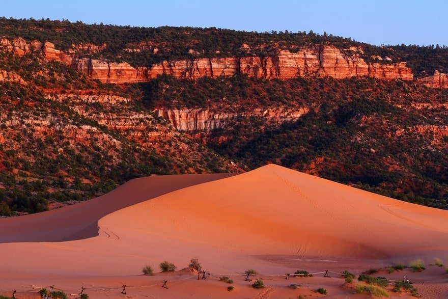
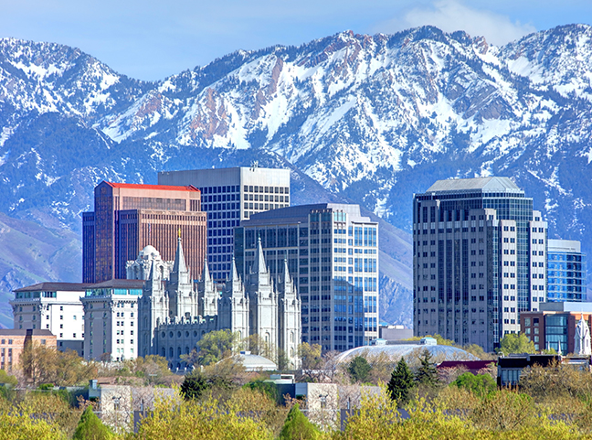

Utah
Utah is known for its National Parks, red rocks, deserts, sand dunes, and its capital Salt Lake City. Surprisingly, Utah is also known for its skiing.
Sand Dunes
Coral Pink Sand Dunes is a very well known State Park in Utah. This park has hundreds of sand dunes and even has a dune that is 100 feet tall. Visitors can sand-board down the dunes as well as body-board down. Visitors can also walk on the dunes and explore what's around.
National Parks (Zion)

There are a total of five National Parks in Utah: Bryce Canyon, Zion, Arches, Canyonlands, and Capitol Reef National Park. My favorite National Park is Zion because it is so big and has many different great views and trails to hike on. Zion has steep red cliffs, scenic drive throughs, rivers, waterfalls, and much more. My favorite places to go in Zion National Park is the Narrows. The Narrows is a long trail that goes through a river between huge mountains. The trail is all water and can take up to 14 hours to walk the entire trail.
Salt Lake City
Salt Lake City is the most populous city in Utah. Salt Lake City was also home of the 2002 Winter Olympics. The mountains surrounding the city are known for the large amounts of light snow they get which is great for skiing and snowboarding. Most of the snow comes from a large lake nearby called The Great Salt Lake which covers 1,700 square miles.
Other activities
- Paragliding
- Hogle Zoo
- Skydiving
- River rafting